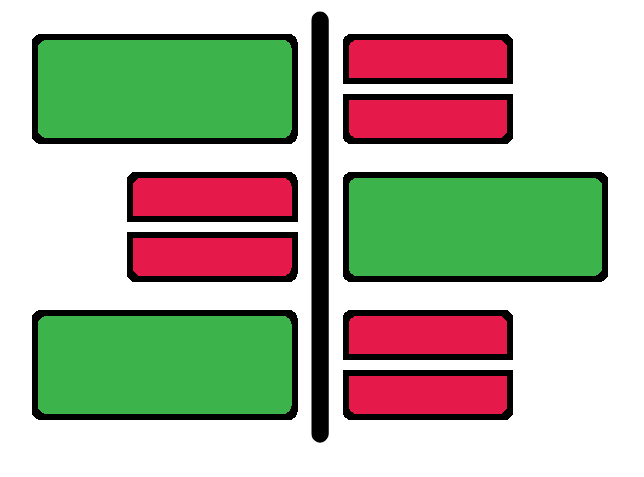

Chapter 16 Differential abundance analysis

The ANCOM method aims to identify differentially abundant taxa between sample groups. It is a complex method requiring different steps.
The steps to carry this out are:
- Collapse the ASVs into taxa
- Add pseudo-count to the abundance table to convert ‘0’ to ‘1’
- Run ANCOM selecting a categorical metadata to test
If you are still in ‘dada2-diversity-34583’ directory, please remember to move out:
16.1 Taxa collapse

First, we need to collapse the ASVs into taxa. This is done as seeing which ASVs are differentially abundant with no taxonomic information is not very useful. Let us choose greengenes level 5 which equates to family.
qiime taxa collapse \
--i-table table-dada2.qza \
--i-taxonomy taxonomy.sklearn.qza \
--p-level 5 \
--o-collapsed-table comp-ancom-table-l5.qzaParameters

--i-table: Input artifact containing the abundance table (non-rarefied) for the identified variants.--i-taxonomy: Input artifact containing the taxonomic classifications of the ASVs.--p-level: The taxonomic level at which the features should be collapsed.- In this case the level refers to family. This can be checked via the taxonomy bar plot artifact
--o-collapsed-table: Output artifact containing the abundance table for the specified taxa level.
16.2 Pseudo counts
Add pseudo-count to the abundance table with the purpose of converting 0s to 1s. This is required as ANCOM will fail with abundance values of 0.
qiime composition add-pseudocount \
--i-table comp-ancom-table-l5.qza \
--p-pseudocount 1 \
--o-composition-table comp-ancom-table-l5-pse.qzaParameters

--i-table: Input artifact containing the abundance feature table.- In this case the features are families but it can be other taxa levels or even ASVs.
--p-pseudocount: Value to add to all counts in the feature table.--o-composition-table: Output artifact containing feature abundance table with added pseudocounts.
16.3 ANCOM
Finally, we run ANCOM. In this instance we will use Location as the metadata so we can find biomarkers that differentiate between Corridor and Toilet.
qiime composition ancom \
--i-table comp-ancom-table-l5-pse.qza \
--m-metadata-file metadata.file.txt \
--m-metadata-column Location \
--o-visualization l5-ancom-Location.qzvParameters

--i-table: Input artifact containing feature abundance table with added pseudocounts.--m-metadata-file: Metadata file for our samples.--m-metadata-column: Metadata column within the metadata file to use for the differential abundance analysis.--o-visualization: Output visualisation artifact containing the ANCOM results.
16.4 ANCOM: visualise
This produces a visualisation file (l5-ancom-Location.qzv, opened with QIIME2 view) with the following sections:
- ANCOM Volcano Plot: A dot plot of the W statistic (y) against the CLR (x).
- Each dot represents a feature (family in this case) in the dataset.
- W statistic: The higher this value the more significant the feature is differentially abundant between groups.
- CLR (centred log ratio): In practical terms this is how different the abundance of the feature is between the metadata groups in terms of log-fold change. The further the value is from 0 the more different the abundance.
- ANCOM statistical results: This shows the name and W statistic of features found to be differentially abundant.
- ANCOM automatically chooses a W statistic threshold for significance.
- Percentile abundances of features by group: This is a table which can be thought of as containing the text version of a boxplot. This shows the abundances of the differentially abundant features for the different groups.
The statistical definition of the W-statistic is:
The number of times the log-ratio of a taxon with every other taxon being tested was detected to be significantly different across groups.
For even more info you can check out this response on the QIIME 2 forum.
16.5 ANCOM: MCQs

Attempt the below MCQs.
- Which family is detected as a biomarker? I.e. which family is differentially abundant between Corridor and Toilet?
- Which sample group has a higher abundance of the detected biomarker family?
Run ANCOM analysis for genus level (level 6). You will have to start from the qiime taxa collapse command. You can press the up arrow key to go to previous commands and edit them. If you do this remember to change the input and output options. Try running these commands yourself before looking at the contents of the below box.
#Collapse taxa
qiime taxa collapse \
--i-table table-dada2.qza \
--i-taxonomy taxonomy.sklearn.qza \
--p-level 6 \
--o-collapsed-table comp-ancom-table-l6.qza
#Add pseudo count
qiime composition add-pseudocount \
--i-table comp-ancom-table-l6.qza \
--p-pseudocount 1 \
--o-composition-table comp-ancom-table-l6-pse.qza
#ANCOM
qiime composition ancom \
--i-table comp-ancom-table-l6-pse.qza \
--m-metadata-file metadata.file.txt \
--m-metadata-column Location \
--o-visualization l6-ancom-Location.qzv- How many genera are discovered as biomarkers?
Run ANCOM analysis to compare the family abundances between the 2 places (Entrance vs MainBuilding). We have already collapsed and added psuedocounts to create an ANCOM-ready family abundance table. Therefore you will only need to rerun the qiime composition ancom with changed options. Try running these commands yourself before looking at the contents of the below box.
- Are any families discovered as biomarkers when comparing the 2 Places?
16.6 ANCOM: summary
We have detected biomarkers when comparing the 2 locations, Corridor and Toilet. This matches the fact we saw a statistical difference between the beta diversity distances of these two groups. The family Clostridiaceae was found to be in higher abundance in the Toilet samples. This makes biological sense as this family is known to exist within the human gastrointestinal tract.
In contrast, we found no biomarkers when comparing the Places, Entrance and MainBuilding. This matched with our lack of difference in the beta diversity distances.
That is the last of the analysis. There is only one more chapter on future considerations.